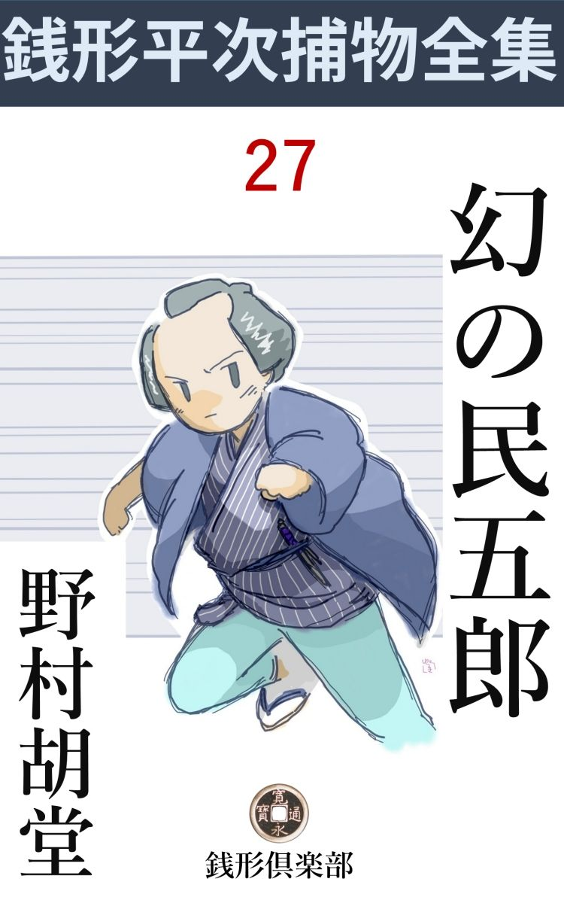
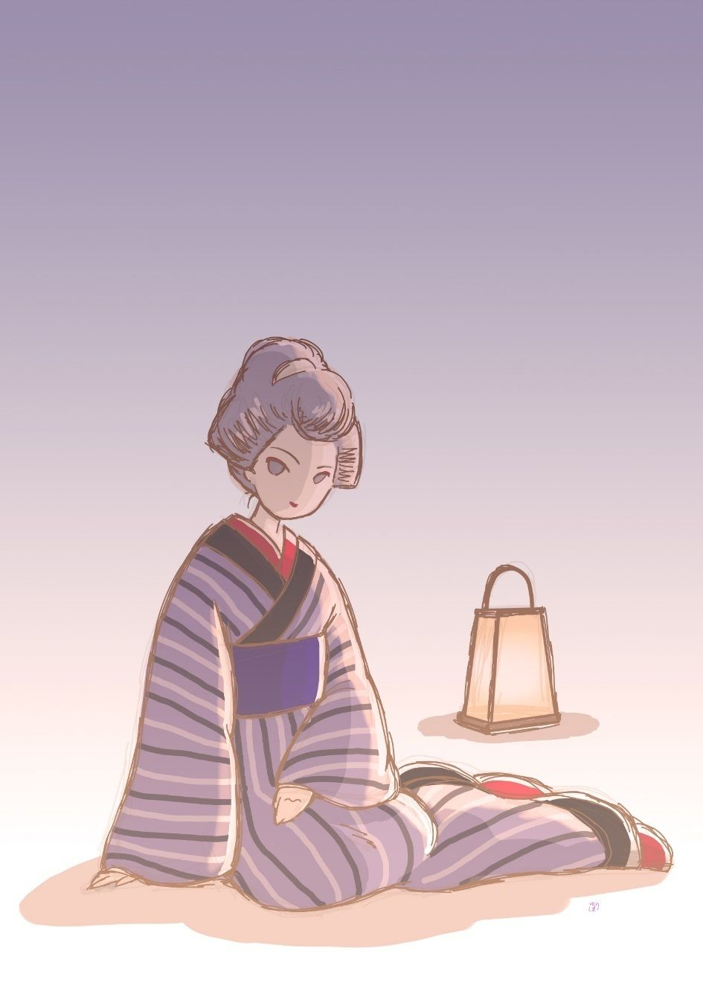

| 幻の民五郎: 銭形平次捕物全集第27話 (銭形倶楽部) | |
| 野村胡堂 | |
| ZENIGATA CLUB (2018) | |

一
「親分、梅はお嫌いかな」
「へえ？」
銭形平次も驚きました。相手は町内でも人に立てられる三好屋の隠居、十徳 まがいの被布 かなんか着て、雑 俳 に凝っていようという仁 体 ですが、話が不意だったので、平次はツイ梅干を連 想 せずにはいられなかったのです。
「梅の花じゃよ、------巣鴨 のさる御屋敷の庭に、大層見事な梅の古木がある。この二三日は丁度盛りで、時には鶯 も来るそうじゃ。場所が場所だから、俗 も風雅 も一向寄り付かない。御屋敷の新造が解った方で、------三好屋の知合いで、風流気のある方があったら、是非御一緒に------とこういうのじゃ、どうだな、八五郎兄哥 」
三好屋の隠居は、相変らず日向に寝そべって、自分の身体一つを持て余しているガラッ八の八五郎に声を掛けました。
「梅の花というと、花合せの赤 丹 を思い出すような人間に、風流気なんかあるわけはありません。御隠居さん、無駄ですよ」
平次は苦笑いをしております。
「お言葉だがネ親分、梅の花なんざ、小汚 ねえばかりで面白くも何ともねえが、御馳走と新造付なら考えるぜ」
「馬鹿野郎、何て口の利きようだ」
「いいやね、親分、八兄哥は正直だ、------それに向うじゃ、平次親分を伴れて来て下されば、恩に着ますって言う位だから、御馳走の方は俺が引受けますよ」
三好屋の隠居は、何心なく筋書の底を割ってしまいました。
「ヘッ、御名指 しと来やがる、お安くねえぜ、親分」
とガラッ八。
「そんな事だろうと思いましたよ、御隠居さん、話が筋になりそうだ、御供しましょう」
「行って下さるか、親分」
三好屋の隠居は有頂天でした。何か余程甘い話がありそうです。
すぐ支度に取り掛って、三人連れの無駄話に興じながら、巣鴨の屋敷に着いたのは、彼れこれ未刻 半 刻。
藁葺 の洒落 れた門を入って、右左に咲き過ぎた古木の梅を眺めながら、風雅な入口の槃 を叩くと、
「------」
美しい女中が現われて、行儀正しく式台に三つ指を突きます。
何だか、昼 狐 につままれたような心持、平次はもとより、お喋舌 のガラッ八も、毒気を抜かれて黙り込んでしまいました。
「神田の三好屋が、平次親分を連れて参りました。御新造様に御取次を願います」
三好屋の隠居は茶人帽 を脱いで、よく禿げた前額をツルリと撫で上げました。襟へ落ちる柔かい春の陽、梅の匂いに薫醸 された和 かな風、すぺてが静かに、平和に、そして一脈の寂 をさえ持った情景でした。
「暫らく御待ち下さいまし」
芝居の御腰元の外には見たこともないような、淑 かな女中が姿を隠すと、
「ヘッ、三ツ指で、------御待ち下さいまし------と来やがった、親分、悪い心地はしないネ」
「馬鹿」
平次は睨む真似をして見せます。
道々、三好屋の隠居が話してくれましたが、この梅屋敷というのは、三千五百石取の大旗本、本郷丸山の荻野 左仲 の別荘で、住んでいるのは、愛妾 お紋の方。左仲との中に、男の子を一人生みましたが、仔細あって左仲に疎 まれ、巣鴨の梅屋敷に遠ざけられて、女中を相手に豪勢な暮しをしているのでした。
二
「まア三好屋さん、御骨折でしたねえ、平次親分、よくいらっしゃいました」
お紋は下へも置かぬ待遇 でした。年の頃二十七八、脂 の乗り切った美しさで、被布 も着ず、裾も引かず、縞物 を町家風に着た無造作な身扮 のうちに、愛嬌と魅力がこぼれて、誰にでも好感を持たせずにはおかない年増振りです。
「初めて御目にかかります。あっし は神田の平次で、お言葉に甘えて、飛んだお邪魔をいたします」
「まア、そんな改まった事を仰しゃらずに、遠縁の姪 の家へでも来たつもりで、ゆっくりくつろいで下さい。八五郎さんもまア、真四角に坐ったりして、ホ、ホ、ホ、ホ」
「へエ------」
気が付いて見ると、ガラッ八の狭い袷 から、膝っ小僧が喰み出しているのです。
「今自慢の料理をお目にかけます。ちょっと、御待ち下さいまし」
身を翻 すとお紋は、大きい揚羽 の蝶 のように、ヒラリと襖の蔭へ隠れました。多分お勝手の指図でしょう。
「ね、万事あの通りさ、恐れ入ったろう、親分」
三好屋の隠居は、人の好さそうな眼をしばたたいて見せました。
「御新造の元の身分は？」
平次はそっと囁きました。
「何でも、町芸妓だったということだが、詳 しいことは誰も知りませんよ。荻野左仲様が見染めて三千五百石のお部屋様に直して------」
「シッ」
話の最中に、
「まア、内証話？ 私の棚卸 しなんか嫌ですよ」
朗らかさと、美しさを撒 き散らして、お紋は入って来ました。
それから酒------。
お紋は元が元だけに、すっかり三人を潰してしまいました。灯が入った時は、もう玉山 崩 れて、足の踏み場もないほどの有様です。
何時もの平次なら、こんなになる前に帰ってしまったでしょうが、お紋の取なしの底に、何か重大な意味がありそうで、ツイ立ちそびれて暗くなってしまったのでした。
ガラッ八と三好屋の隠居が、すっかり潰れて正体も無いのを尻目に、平次はそっと庭へおり立ちました。
誂 えたような銀鼠色の朧月夜 、春の靄 に蒸された梅が匂って、飲み過ぎた頭の芯 が痛むような中を、なんの心もなくそぞろ歩いていると、道は不意に尽きて、目の前にかなり大きな離屋 が建っております。
「どうぞこちらヘ------」
どこから現われたか、小腰を屈 めたのは冷たい美しい女中、雪洞 を左手に移して、離屋の柴 折戸 をそっと開けました。
黙って入ると、中には籠 行燈 が点 いて、座蒲団が二つ、平次が来るのを待っていたような心憎い用意です。もっとも、夜風に吹かれて庭を歩いたのは出来心ですから、そんな都合にならなければ、そっと座を外 さして、ここへ案内するつもりだったのでしょう。
「親分、こんな折を御待ちしておりました」
「あ、御新造」
女中に呼ばれて駆け付けたらしいお紋は、少し息をはずませて、お品の悪くない程度に、斜 に坐るのでした。灯を背にして、ほの白い顔、岩佐又兵衛の絵から抜け出したような、妖艶な姿態 が、相手を苛立たせずには措きません。

三千五百石取の旗本の妾------地 の町芸妓が匂うにしても、何となく不思議な魅力 を持った女です。
「御新造、ざっくばらんに申しますが、あっし をここへ呼んで下すった御用というのは何です」
平次はたいして酔っていませんでした。打ち寛いだうちに何となく事務的 に、こう片腕を膝に突きます。
「聞いて下さい、親分、------私は世にも恐ろしい者につけ廻されております」
「------と仰しゃると？」
「あの姿のない大泥棒、近頃御府内を騒がせている幻 の民五郎に」
「えッ」
「親分、私を助けて下さい。私ばかりじゃありません、丸山の御屋敷に残して来た、若様の御身の上もどうなるかわかりません」
「詳 しく承わりましょう、一体どうしたと言うのです」
平次は事の重大さに膝を乗り出しました。
幻の民五郎というのは、一年ほど前から江戸中を荒し廻る不思議な怪盗で、銭形の平次も、こればかりは手を焼いていた相手だったのです。
幻の民五郎の正体は、誰も確かに見たと言う者はありませんが、大家や大町人を手当り次第に襲い、現金だけを盗んで歩く怪盗で、うっかりそれを妨 げたり、追掛けたりしようものなら、虫のように刺殺されることを覚悟しなければならなかったのでした。
姿を見た者をきっと殺す------それが幻の民五郎の流儀だったのです。
幻の民五郎は、唐紙や屏風 の絵の中へも溶け込み、衣桁 や衣紋竹の着物の中へも消えて無くなると言われました。兎に角、不思議な術を心得た怪盗で、一年越し、江戸中を人もなげに荒し廻りながら、南北の与 力 五十騎、同心二百四十人、その配下の岡っ引は何百人とも知れませんが、誰にも指も差させなかったのでした。
銭形の平次ほどの者も、幻の民五郎には二目も三目も置かされました。今までも随分手を尽して追い廻しましたが、足跡一つ、髪の毛一本捜し出すことが出来なかったのです。
「------」
平次はもう一度強くうなずきました。
江戸中の御用聞の中から、選りに選って、幻の民五郎の挑戦 を受けたような気がしたのです。
それは実に、一刻一瞬の油断もならぬ、命がけの挑戦でもあったのです。
三
「親分、聞いて下さい。私は丸山の屋敷から放 り出された上、何にも知らない若様------私の腹を痛めた勇太郎様まで------命を狙われています」
お紋の話はまことに混み入ったものでした。------町芸妓をしていたお紋は、受出されて丸山の荻野 家に入り、本妻亡き後は、奥方同様の待遇 を受け、二年前に跡取の勇太郎まで生みましたが、亡くなった本妻の弟で、変人扱いにされている高木銀次郎が、用人の大沢幸吉と腹を合せて、事毎にお紋毋子を陥 れようとしたというのです。
高木銀次郎は兵法忍術に凝って三十過ぎまで荻野家の世話になっているような人間ですが、義兄荻野左仲の眼を盗んで、お紋を執念 く追い廻し、手厳しく恥かしめられたのを根に持って、悪事の仲間を語らって、お紋の素姓をあばき立て、到頭荻野家にもいられないような事にしてしまったのでした。
お紋の素姓------と言うのは、さすがに本人は言い渋 りましたが、訊き上手の平次が、いろいろ鎌をかけて引き出したところでは、将軍秀忠の命を狙ったという疑いで、宇都宮十五万石を召上げられ、先年出羽の配所で死んだ本多上野介 正純 ------その謀士で、釣 天井 の仕掛を拵えたと思われている、河村靭負 こそは、お紋の本当の父親だったのです。
謀叛人 の娘として、お紋は艱難辛苦を嘗めました。浅草の乳母に引き取られて育った上、その乳母にも死別れ、町芸妓になったところを、荻野左仲の目に留って、暫らく湯島に囲われ、本妻が死んでから丸山の屋敷に入って、跡取の勇太郎を生んだ------と言うのです。
お紋の異常な美しさも、その魅力の底に潜む品位も、河村靱負の娘と聞けば、成程うなずけないことはありません。
「私は幸い父親の遺した物や、荻野家の御手当で何不自由なく暮しております。このまま朽 ち果てても怨みとは思いませんが、謀叛人の娘の腹を藉りた子に、三千五百石の由緒ある旗本の家は継がせられないと言って、高木銀次郎、大沢幸吉の一味が、私の手から父河村靱負 の形見------短刀と系図 を奪い取って、それを証拠に勇太郎様を追い出そうとしているのは我慢がなりません」
「------」
「親分、そんな理不尽なことがあるでしょうか。親は謀叛人でも、その娘の私になんの科 がありましょう。まして勇太郎様はまだほんの三つ、あんまりお可哀想じゃありませんか」
お紋はそっと涙を拭きました。居崩れた膝を直して、下から平次を仰ぐ顔は、どう見ても三十近い大年増ではありません。
母屋 の方からはガラッ八と三好屋の隠居の歌うダミ声。
「ところで御新造、幻の民五郎の話が出たようだが、彼奴 はどうかしましたか」
平次は耐え兼ねて訊きました。
「咋夜何者とも知れず忍び込んで、手文庫の中から手紙の束を盗んで行きました」
「その父上の形見とやらを？」
「いえ、それは袋戸棚に入れてあったので幸い助かりました。盗られたのは、高木銀次郎から私へくれた恋文が七本」
お紋もさすがに極りが悪そうでした。
俯向いてほのかに笑うと、片面が翳 って、何とも言えない淋しさが湧きます。
「何で、そんな物を持っていなすった、焼きも捨てもせずに」
と平次。
「万一、高木銀次郎が私を相手に正面から来た時は、あの汚 らわしい恋文に物を言わせるつもりでした。頼る者もない女は何かにつけて、用心深くなります」
「フム」
「父親の形見の短刀と、系図は無事でしたが。いずれ今晩あたりは又盗りに来ましょう。姿も、形も無い曲者が、厳重な締りを開けて入って、好きな物を盗って、衣桁 の着物に溶け込むように隠れたのですもの、幻の民五郎とでも思わなければ、この眼がどうかしております」
「------」
「形見の短刀と系図が向うの手に入れば、勇太郎樣は虫のように押し殺されるか、野 良 犬 のように追い出されるに決っております。親分、お願いで御座います。私を助けるつもりで、今晩はここへ泊って下さいまし」
お紋は寄り添って、平次の裾でも、帯でも掴みたそうでしたが、さすが、年にも身分にも恥じて畳へ手を落したまま、がっくり首を垂れるのでした。
「幻の民五郎には一年越し馬鹿にされている。勝つか負けるか解らないが、兎に角及ぶだけの事はして見ましょう、------ところで、民五郎は、どうして高木や大沢と一緒になったか、心当りはありませんか」
「何にも、------もっとも高木銀次郎は武芸兵法に凝 って、わけても忍術は自慢ですが」
「フム」
どうやらその辺がキナ臭いようでもあります。
四
いい加減酔っ払っているガラッ八は、追っ立てるようにして宵のうちに神田へ帰しました。
それは、お静が待っているといけないと思う、平次の心やりからでした。
三好屋の隠居は、止めるのも聞かずに、亥刻 過ぎ急に思い立って帰ると言い出します。
「大丈夫、駒込へ出る前に駕籠を拾って行く、年は取ってもシャンとしているぞ」
そんな事を言いながら、茶人帽を阿 彌 陀 に、足元危うく巣鴨の夜の闇へ出たのです。
平次は母屋の奥の一と間、八畳の贅 を極めた部屋に、生れて初めての絹夜具に包まれて寝 みました。有明の絹行燈は、少し艶めかしく枕屏風の影を青畳に落して、馴れない平次には結構過ぎて寝心地が悪い位。
枕元の小机の上には、帛紗 に包んで、お紋の父河村靱負の形見と言う短刀、------主君本多上野之介が、東照権現様から頂いて、靱負に預けたままになったと言う、三つ葉葵の紋を散らした因縁 附の短刀------を置いて、何べんも寝返りを打ちながら、悩ましい眠りに落ちました。
お紋は慎み深く、それっきり姿を見せず、美しい女中達も遠く退って銘々の部屋へ入った様子、巣鴨の夜は、滅入るように、ただ深々と更けて行きます。
「野郎ッ」
平次はガバと起きました。
何やら魍魎 が、自分の喉笛を狙っているのを、夢心地に気が付いたのです。
巨大な怪鳥のようなものが、平次の胸の上をヒラリと飛びました。
「御用ッ、神妙にせい」
平次は何やら掴んでグイと引くと、一朶 の黒いものが手に残って、曲者はパッと飛びました。恐ろしい軽捷 な身のこなし。
追いすがる平次は、枕屏風にハタと躓 く間に、曲者の身体は、真に一片の黒雲のように、平次の袷を掛けた衣桁へ、サッと消え込んでしまったのでした。
「己れッ」
続いて飛付きましたが、手答もなく衣桁は倒れて、平次が抱き付いたのは、脱ぎ捨てた自分の袷だけ。
「どうなさいました」
やや暫らく経ってから、物音を聞き付けたらしい主人のお紋は、女中に手燭 を灯 させて駆け付けました。
「あ、御新造、到頭」
「------」
「幻の民五郎は、短刀を奪って行きましたよ」
「えッ」
「面目次第もないが、少し油断しました」
銭形の平次も、すっかり恐縮して髷 節 を叩いております。
「親分、どうしましょう」
お紋は根も力も抜けてしまったように、冷たい畳の上へ、ヘタヘタと坐り込んでしまいました。派手な長 襦 袢 の上へ、大急ぎで羽織ったらしい小袖の紫が、冷たく美しい女中の差出す手燭の中に、又となく艶めかしく見えるのでした。
「一度はやられたが、今度は------」
平次は急 しく袷を引っかけると、部屋の外へ飛出しました。左手には有明の行燈を提げて、曲者の通ったらしい道を、嘗 めるように進んで行きます。
「お、ここから入ったのか」
縁側の戸が一枚、物の見事に外されて、そこから点々たる泥足の跡が、平次の寝室まで真っ直ぐに続いているのでした。
「親分、何か見付かりましたか」
お紋と二三人の女中が、恐る恐る廊下を覗いております。
「御新造、不思議な事だらけですよ」
「------」
「この様子じゃ幻の民五郎は、思いの外甘い野郎かもわかりません」
「まア」
「すぐ捕まりましょう、御安心なさいまし」
平次の声は妙に自信に満ちております。
「どうか、早く捕えて下さい、あの短刀はざらにある品じゃありません。鞘 は三つ葉葵の紋散らしで御公儀に書上げのある品、本多上野之介様の御品と判り切っております」
「------」
「おや、泥足の跡は、入ったのばかりで、出たのがないのはどうしたことでしょう」
「------」
お紋は妙なことに気が付きました。
「それにこんな大きな足の人間はあるものでしょうか」
「------」
平次はそれには答えず、その辺中を忙 しく見廻しております。
「親分、まだ幻の民五郎が家の中にいたらどうしましょう、捜して見て下さいませんか」
「大丈夫ですよ、御新造、その大きな足跡は大一番の草鞋 を穿いて附けた跡で、帰りにはそれを脱ぎ捨ててしまいましたよ」
「まア」
「一寸待って下さい」
平次は庭下駄を突っかけて、暫らく縁の下から庭の植込みを搜しておりましたが、やがて、仁王様の草鞋のような、大きな泥草鞋を一足ブラ下げて帰って来ました。
「まア」
女達の驚きは見物 でした。
「この足跡はひどい内輪じゃありませんか」
お紋は鋭い女でした。平次が気が付いているかいないかわかりませんが、兎に角、先を潜 るようにいろいろの事に気が付きます。
「それが面白いところですよ、御新造」
「女------まさか」
お紋はぞっとした様子で肩を萎 めました。
「幻の民五郎が女に化ける筈はありません。これは忍術の方の忍びの足取りです」
平次は腰を浮かして、内輪に爪立った忍び足をやって見せました。
「忍術？」
お紋はギョッとした様子です。
五
騒ぎは、これがほんの序幕 でした。
翌る朝、巣鴨の往来------一寸人に気付かれない塀の蔭に、三好屋の隠居が突殺されているのが発見され、続いて、お紋の家の隣、界隈の物持ちで通っている植木屋へ、型の通りの怪盗幻の民五郎が入って、小判で二百両あまりの金を奪った上、主人惣吉の土手っ腹を刳 って逃げ失せたのです。
騒ぎは一刻も経たぬうちに、巣鴨中を煮えくり返らせました。名主五人組が立会って検屍 を受け、土地の御用聞大塚の重三が、委細 呑込んで探索にかかりましたが、そこに居合せた銭形の平次の器量の悪さと言うものはありません。
三好屋の隠居を殺したのも、植惣の主人を刺したのも、同じ匕首らしく、唯一と突きで急所を誤らなかったのは、何と言っても恐ろしい手際です。
たった一つの手掛りと言うのは、植惣の庭に落ちていた帛紗 で、これはお紋の家から、短刀を包んで盗み出した品ですから、植惣の曲者は、お紋の家を襲った曲者、すなわち幻 の民五郎に間違いありません。
平次が曲者を追掛けた時、手に残ったのは少し羊 羹 色 になった羽二重の羽織で、紋は、丸に鷹 の羽の打つ違い、ざらにある紋ですが、------高木家の定紋もこれと同じもの------、とお紋はそっと平次に囁きました。
「親分、大変な事が始まったんだね」
「お、八か」
「銭形の親分が幻の民五郎に嘗 められたって巣鴨中の評判だぜ。俺は口惜しくって、口惜しくって、先刻から、そんな事を言う野郎を、二三人殴り飛ばしてやったが------」
「何て事をするのだ」
飛んで来たガラッ八の遠慮のない声を聞くと、平次はさすがに顔を反 けました。
「俺が頑張っていさえすりゃア、こんな事がなかったんだ。神田へ帰ったのが一代の不覚さ」
「つまらねえ事を言うな、それより手を貸せ、刃物を捨てて行ったかもわからない」
「刃物なんざ、何だって構やしない。幻の民五郎が匕首 へ本名でも書いていりゃ占めたものだが」
「何を、くだらない」
平次は取り合いませんでした。梅屋敷から植惣の庭のあたり、薮 も溝 も、木立も、塀の下も、念入りに見て歩くと、梅屋敷の大根畑の中に、何やら新しい足跡。
「おや」
よく見ると黒い土の間に、キラリと光るものがあります。
土をかき退けるように、掘り出して見ると、見事な短力が一 口 、柄の鮫 がすっかり血に汚れて、刃もひどい血曇りですが、どうしたことか鞘 が見当りません。
「あれだ」
紛 れもない、昨夜平次が枕元から盗られた短刀。曲者はこれで植惣を害 めた後、三つ葉葵を散らした鞘だけは持って帰ったのでしょう。
その間に、お紋の説明を聴いた大塚の重三は、
「よしッ、それじゃ下手人は高木銀次郎とか言う浪人に決った。旗本の食客 じゃ始末が悪いが、幻の民五郎の正体と判っちゃ放って置けまい。若年寄方と掛合いごっこを始めちゃ鳥が飛んでしまう、構う事はねえ、外へ出たところを縛れ」
無法な奴があったもので、そのまま子分を伴れて、本郷丸山へ飛んで行きました。
旗本は勿論のこと、武家は町方の手で無闇に縛れなかったのですが、浪人となると、話が違います。高木銀次郎、武家には相違ありませんが。お主も係累 もない。天涯孤独の浪人。近頃は義兄の荻野左仲のところにも居憎くなったと見えて、食 扶 持 だけを貰って、ツイ屋敷外の長屋に、鰥 暮 しの気楽さを楽しんでいるのでした。
六
「相手は兵法と忍術に凝っているんだ、油断をしちゃならねえ」
「心得たよ、親分」
「腰の物を預けたら、直ぐ飛込んで、口上を言うんだよ」
「ヘエ」
「腰の物は番合にいる娘が持って逃げる手筈だ、ドジを踏むな」
「合点」
大塚の重三は、十五六人の子分を伴れて、もう一刻も前から、丸山湯の路地に身を潜めております。
お紋は、謀叛人 の娘と言う自分の素姓は言いませんでしたが、高木銀次郎の怪しい事は、重三へも平次と同じように話していたのです。
「そら、来たぞ」
「シッ」
羊羮色の着流し、不精らしく懐手をして、一刀を落した浪人体の男は、大通りから入って、丸山湯の方へ差掛ったのでした。
三十二三の瘦ぎすながら見事な恰幅 。少し月 代 が伸びて、青白い顔も凄みですが、身のこなし、眼の配り、何となく尋常ではありません。
浪人者は丸山湯の暖簾 を肩で分けて、スッと中へ入りました。
「大層空いているな」
番合ヘ一暼 。
「ハ、ハイ」
娘は一ぺんに顫え上がってしまいました。
刀を鞘 ごと抜き取って、娘に渡そうとして、ハッと気が付いた様子。
「可怪しな娘だ。逃げ腰になって腰の物を受取る奴があるものか、------それに大層顫 えているではないか」
「------」
思わず、今入って来た入口の方へ眼を移すと、暖簾 の間から、鉢巻、襷 と言った扮 装 の人間が、押し重なって覗いているではありませんか。
「おや」
浪人は一度渡しかけた刀を引ったくるように、ピタリと左腰に差しました。プツリと鯉 口 を切っております。
かくと見た暖簾の外の一隊。
「それッ、気が付いたぞ、取逃すなッ」
「おッ」
職業意識を真っ向に振りかざして、バラバラと土足のまま飛込みました。
「御用」
「神妙にせい」
殺到する十手、捕縄、十五六の肉 塊 。
「人違いするな、俺は高木銀次郎、縄目を受ける覚えはないぞ」
浪人------高木銀次郎は、飛退くと積んだ小桶を楯 に、流しの真ん中に、身構えました。
「その高木銀次郎を召捕るのだ、神妙にせい」
「何？ 高木銀次郎と知って縛るというのか、俺は縛られるのが嫌いだ」
ギラリと引き抜いた一刀、陸湯 にスーッと入れて、振り被ります。
恐ろしい落着きと、心得た態度に、十何人の捕方は、ギョッとして立停りました。
「御用」
「神妙にせい」
「馬鹿奴ッ、何の理由 があって縛る。それを聞かないうちは、不浄 役人の儘になる俺ではない、命の要らぬ奴は来い」
振り被った一刀は、毒蛇の如くりゅう と閃めきます。
「高木銀次郎こと、幻 しの民五郎とはその方に相違ない、訴人があって確かだ、神妙にお縄を頂戴せい」
「何、幻の民五郎」
あまりの事に高木銀次郎、一歩退きましたが、運悪く流しのぬめりに足を取られて、ハッと滑 るところへ、待ち構えた小桶四つ五つ、三方から狙い打ちに飛びました。
「あッ」
それを避けるはずみに、高木銀次郎の身体は、物の見事に引くり返ります。
「それッ」
畳みかけて五六人、こうなると馴れたものが勝です。兵法にも忍術にも及ばず、あッと言う間に高木銀次郎、高手小手に縛り上げられてしまいました。
七
「親分、高木銀次郎は白状しないって言いますぜ」
「そうだろう」
平次は近頃すっかり憂 欝 でした。お紋のところからは三日に一度位ずつ誘い出しの手紙が来ますが、あの晩の縮 尻 以来家に籠って考え事ばかりしていたのです。
親分思いのガラッ八は、すっかり心配して、お静と心を協 せていろいろ慰めもし、励ましもしましたが、平次は頭を振るだけで、一向相手にもならなかったのです。
そのうちに、高木銀次郎の長屋の天井裏から三つ葉葵の紋を散らした短刀の鞘が現われて、徳川の禄を食 む役人達の神経をすっかり尖らせてしまいました。
平次が曲者から剥いだ羽織は、紛れもなく高木銀次郎のものと解った上、家捜しをして見ると、幻の民五郎が諸方から盗んだ品------現金以外は滅多に手をかけない民五郎でしたが------財布 や胴巻や金入れといったようなものや、荻野左仲の食客に似気ない大金が、床下、押入れの奥などからぞくぞく現われて来たのです。
大塚の重三はすっかり得意でしたが、肝腎の高木銀次郎は、骨が舎利 になっても白状しません。
「八、もう一度運試しにやって見ようと思うが、どうだろう」
「有難い、親分がその気なら、あっし は命を投げ出しますぜ」
「一か、八か、------兎に角、もう一度やって見なきゃア俺には腑 に落ちない事ばかりだ」
「何をやらかしゃいいんで、親分」
「耳を貸せ」
何やら打合せて平次は、羽織を引っかけると、どこへ行くとも言わずにフラリと飛び出してしまいました。
最初は本郷丸山町の荻野左仲の屋敷。
丁寧な口上を取次がせて、用人大沢幸吉に逢い、一刻余りも話し込んだ上、そこを出ると、巣鴨の荻野家の別荘------今はお紋の宿へやって来ました。
その時はもう夕景。
「あら、平次親分、随分久し振りじゃありませんか」
お紋は相変らず機嫌よく迎えてくれて、奥の一と間へいそいそと案内しました。
「御新造、すっかり御無沙汰しました。曲者は逃す、幻の民五郎は重三兄哥 に捕 えられる、いやもう平次も散々の体で、一時は十手捕縄をお上へ返上しようかと思いましたよ」
平次は本当に悄気 ている様子でした。
「そんな事はありゃしません。平次親分は、曲者の羽織を掴んで、動きの取れぬ証拠を押えたり、足跡や草鞋 から、いろいろの事を言い当てなすったり、畠の中から短刀まで捜し出したじゃありませんか。御遠慮も場合によります、お目にかかってお礼を申し上げたいと思って、何べんお迎えを差上げても、いらっしゃらないんで、どんなにお怨み申し上げたことか------」
「------」
「幸い私も、近いうちに、丸山町に帰ることになりました。それもこれも、親分の御骨折の御蔭、今晩はどうぞ御ゆっくり召し上って下さい」
本当に下にも置かぬ待遇 でした。
平次はいつもになく落着き払って杯を挙げ、宵のうちから大分ろれつが怪しくなっております。
「御新造、高木銀次郎はここへ来たことがあるでしょうか」
「飛んでもない、あんな奴を寄せ付けることじゃありません」
「それにしちゃ、雨戸を開けて迷いもせずにあっしの泊っている部屋へ来たのは変ですね」
「え？」
「変と言えば、変なことだらけですよ、御新造」
平次はもう眼の色さえ怪 しくなっております。
「何が変でしょう」
凝 と平次を見詰めた女の眼、------一と息に猪口 をあけると、平次の手に持たせて銚子を上げます。
「足跡も変でしょう。人の家へ泥棒に入るのにわざわざ泥を付けた草鞋 を穿かなくたっていいわけだ。あの晩は雨なんか降っちゃいなかったでしょう」
「------」
「草鞋を植込に捨てたのに、庭に足跡がないのはおかしいと思いませんか。曲者は縁側から草鞋を植込へ抛り込んで、そっと元の廊下を引返し、裏から植 惣 へ行って植惣の主人を殺し、又引返してこの庭に入って、大根畠へ短刀を隠して行ったことになりますね、ゲープ」
「------」
「どう考えても腑に落ちない事だらけでさアね。御新造、あの晩、この家の裏口に血が------ほんの少し血が付いていたのを御存じですか」
「えッ」
「曲者は大根畠に短刀を隠して、それから又この家へ引返したことになるのは変じゃありませんか」
「------」
「それとも、宵のうちに三好屋の隠居を殺して、ここへ引返したかな」
「------」
平次の舌は次第に冷静に事件の核心 に触れて行きますが、身体は反対にすっかり酔払って、他愛もなくフラリフラリと揺れるのでした。
八
「今晩も泊って下さるでしょうね、親分」
「冗、冗談言っちゃいけません。御新造はもう丸山町のお屋敷に帰んなさる身体だ、------男を泊めたとあっちゃ、ブープ」
平次は立ち上がろうとしましたが、腰が抜けたようにヘタヘタと坐って、口ほどになくフウフウ言っております。
「外ならぬ親分ですもの、誰が何と言うものですか、さア、私が寝んねさして上げましょう」
「------」
お紋は肩を貸して、ようやく平次を抱き起すと、女中------いつぞやの冷たく美しい女中に灯を持たせて、この前平次が泊った部屋に連れ込みました。羽織を脱がし衣桁 へかけて、平次の身体を床の中へ横たえると、上から蒲団を掛けて、トントン二つ三つ軽く叩きます。
「ゆっくりお休みなさいまし、------灯は消して置きましょうね。御用があったら、お手を鳴らして下さい、私か女中が参りますから」
姉らしく囁くのに、平次は返事もせず、もう鼾 をかき始めました。
それから一刻ばかり。
何やら怪しい者、------一朶 の黒雲のようなものが、平次の寝室に忍び込みました。鼾も何にも聞えませんが、手探りで床のそばに這い寄ると、盲目 搜りに蒲団を剥いで、闇にもキラリと閃めく刃。
平次の胸と覚しきあたりを存分に刺したのです。
音も何にもありませんが、身を翻 した曲者は、サッと、闇の中の衣桁へ------。
が衣桁の中には先客があったのです。飛込んで来る曲者を迎えるように、ガバと組み付くと、その儘ねじ倒して膝の下へ。
曲者は僅かな声をあげましたが、蛇のように身体をくねらせると、平次の腕を抜けてサッと廊下へ、
「己れッ」
何と言う早い足でしょう。雨戸を一枚蹴 開 いて、その儘朧 銀 の夜の庭へ、怪鳥の如く飛降りるのを待ってましたとばかり、下から無手 と飛び付いたものがあります。
「野郎ッ、逃すものか」
腕力だけは人の二倍もある、ガラッ八事、わが八五郎が、平次の旨を受けて、宵からそこに待っていたのです。
「八、逃すな」
「何の」
「俺は眷属 を捕まえて来る」
平次は引返して奥へ、その辺にうろうろする女中、美しく冷たいのを見付けると、有無を言わさず縄を打って、元の縁側へ引返しました。
「親分、こいつは人違いじゃありませんか」
「何？」
「ここの御新造------お紋さんですぜ」
「あッ、逃しちゃならねえ」
ガラッ八の手が緩むと曲者はサッと脱け出すのを、追いすがって平次。
「卑怯だぞ民五郎、------俺は滅多に人を縛らねえが、手前のような悪党は勘弁して置けねえ」
ピシリと肩を打つと、お紋はその儘根 芝 の上に崩折れてしまいました。
× ×
翌る日------。
「親分、お紋が幻の民五郎だったんですかえ。俺にはどうも解らねえ、絵解きをしておくんなさい」
八五郎は日向ぼっこをしながらこんな事を言います。
「その通りさ、あの女は生れ付きの悪党だ。身軽で無慈悲で、人を殺すことを何とも思わないが、自分の子だけは可愛かったんだ」
「ヘエ------」
「あの子だって荻野 左仲樣の子かどうか解ったものじゃねえ。高木銀次郎というのは解った人で、お紋の素姓を怪しいと睨んで、義兄 に勧めて遠ざけたんだ。お紋はそれを根に持って高木銀次郎を縛らせ、自分が荻野家へ還 る筋書を作ったのさ」
「親分を引張り出したのは」
「銭形の平次の鼻を明かしたい為さ。悪党は自惚 れると、ついそんな気を起して、罠 に陥ちるものだよ」
平次もさすがに感慨深そうです。
「お紋は本当に河村靱負 の娘でしょうか」
「それも解ったものじゃない。いずれお白洲 で白状するだろう。あの短刀も細工の一つだろう」
「三好屋の隠居は可哀そうですね」
「知らなくていい事を知ったばかりに殺されたのさ。男は怪しい女の内証事を嗅ぎ出そうとしちゃならねえよ。ハッハッハッ」
（編注）
作品中には、身体の障害や人権にかかわる、差別的な語句や表現が見られますが、本書が成立した当時の時代背景等が現代とは異なる古典的な文学作品でもあり、著者が故人でもありますので、底本のままとしました。ご理解、ご諒承のほどをお願い申し上げます。
著者---野村胡堂
挿絵---萩 柚月 © 2017
初出---「オール讀物」昭和九年二月号 文藝春秋社
底本---「錢形平次捕物全集」第二巻 河出書房 昭和三十一年五月三十一日初版
編集・発行 銭形倶楽部